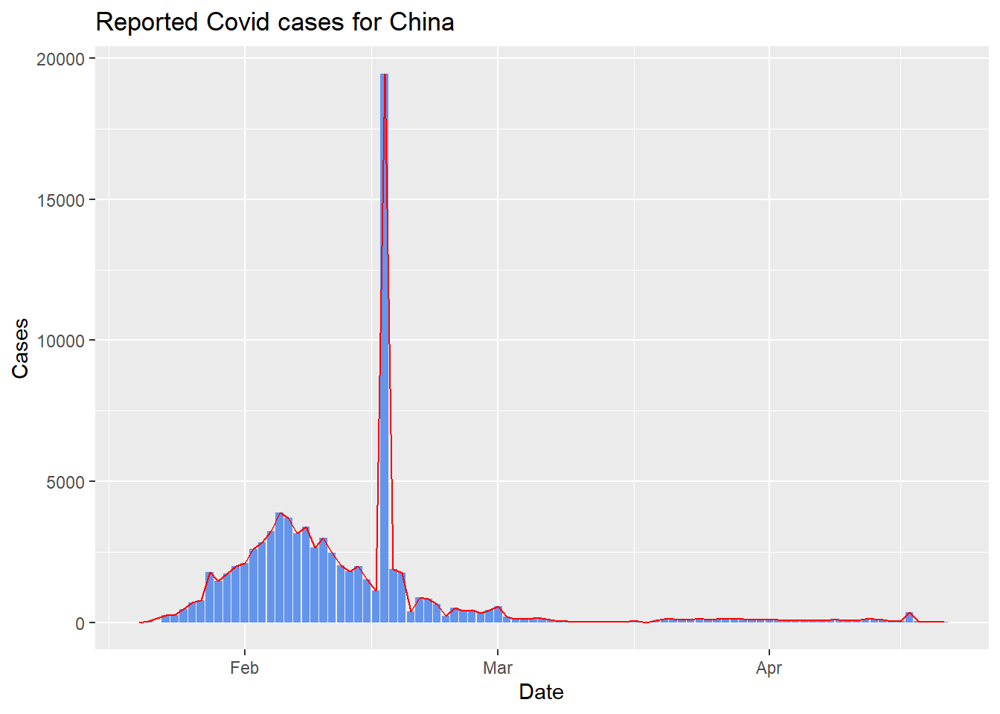

example_table <- data.frame(
a = c(1:3), b = c(4:6)
)
# show example_table
example_table# see output of rowSums
rowSums(example_table)[1] 5 7 9Data covid_cases.rds under R-cafe/day1/data/covid_cases.rds is used for this exercise.
| Column | Description |
|---|---|
date |
date of the case report |
211 columns with the format cases_{country_code} |
number of reported cases of each country and archipelago |
Country codes of interest (i.e. Codes for countries needed for the exercise)
| Code | Country name |
|---|---|
chn |
China |
usa |
United States of America |
vnm |
Vietnam |
sgp |
Singapore |
Before working on this exercise, you should have completed the following checklist
On Github Desktop
Cloned R-cafe repository
Created your own branch on the repository
Checkout your own branch
On RStudio
Make an R project from cloned R-cafe directory
Have renv setup
You are expected to save your answer under R-cafe/day1/takehome.R
Read data from R-cafe/day1/data/covid_cases.rds
Compute the following
The earliest and latest date of data report in the dataset and assign them to 2 variables first_report_date, last_report_date
Create new column case_global for covid_cases, which represents the total cases across every country per report day.
Create new column percent_chn in covid_cases, which represents the percentage of global cases that China’s cases account for per report day.
Use function rowSums() to compute sum of case columns row wise
Example
example_table <- data.frame(
a = c(1:3), b = c(4:6)
)
# show example_table
example_table# see output of rowSums
rowSums(example_table)[1] 5 7 9To create/update a column, use the syntax data[["colname"]] <- values_for_col where length of values_for_col must be equal to number of rows
Example
example_table <- data.frame(
a = c(1:3), b = c(4:6)
)
# create new column new_col
example_table[["new_col"]] <- c(7,9,11)
example_tableComplete the following:
Create a function compute_percent that
takes the dataset and the country code (i.e. the 3 characters after cases_ in column name) as input.
return the percentage of the global cases that the given country’s cases account for per report day.
Use that function to create 3 new columns for covid_cases: percent_vnm, percent_usa, percent_sgp
Print the final covid_cases selecting only the following columns date, percent_chn, percent_vnm, percent_usa, percent_sgp
Use function paste() to join multiple strings together
Example
# joining 2 strings
paste("cases_", "chn", sep = "")[1] "cases_chn"# joining 3 strings
paste("hello", "world,", "welcome to R-cafe", sep = " ")[1] "hello world, welcome to R-cafe"Create a function that returns the plot for number of cases reported for a country over time, where users can
Select the case column being plotted
Change the country name displayed on the plot’s title
Change the color of the bar chart and line chart
Set the min and max date (x-axis limit) for the plot
Given that the code to plot case reports for China is as followed
# Uncomment and run the following if you have not installed tidyverse or ggplot2
# install.packages("tidyverse")
library(ggplot2)
plot_col <- "cases_chn"
country <- "China"
ggplot() +
geom_col( # layer for bar chart
aes( # define columns for x, y axis
x = covid_cases$date, # this is equivalent to covid_cases[["date"]]
y = covid_cases[[plot_col]]
),
fill = "cornflowerblue" # choose color for bar chart
) +
geom_line( # layer for line chart
aes( # define columns for x, y axis
x = covid_cases$date,
y = covid_cases[[plot_col]]
),
color = "red" # choose color for line chart
) +
labs(
y = "Cases",
x = "Date",
title = paste0("Reported Covid cases for ", country) # define title for the plot
)
Complete the following:
Use the function skim() from package skimr to generate summary for the following countries: China, Vietnam, USA, Singapore
Describe notable observations from each country from the result of skim()
Complete the following:
Push your solution to Github with the commit message "day 1 take home solution your_name"
Create an issue commenting on at least 1 other participant’s solution